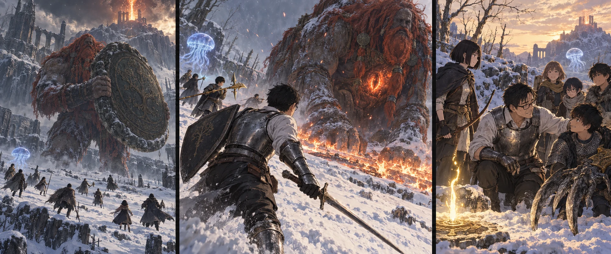

DAY82 / TURN1−92
雪原に、十三の返事。

健太「この地面、捨てる！」
【DAY82｜雪原の大きさ】霧を抜けた時、先生は一瞬、距離を測り損ねた。赤い髪が風に流れている。あれを近くの樹の枝と思った。その下に肩があり、胴があり、雪を押し潰す足があった。巨人が掲げた丸い金属板は、こちらの十三人をまとめて覆えそうだった。「散ったまま。先生の後ろへ並ぶな」。陽太の声で、皆の足が動いた。
先生は剣先を上げて先へ出た。大地の黄金のハルバードから光が広がり、先生と直人、自分自身を包む。初動の四十五秒。その間に位置を取るための誓いだ。ずっと続く防壁ではない。召喚できる印を確かめ、クララを呼ぶ。青い傘が、風の中で静かに開いた。
先読みの頁に、左足首のことは載っていた。けれど、それを目の前で見上げると、知識はひどく小さく思えた。先生は盾を正面に構えたまま立ち止まらず、巨人の視線を横へ誘う。金属板が雪を掻いた。白い塊が波のように迫る。「来るぞ！」。全員が同じ方向へ逃げれば、その先に次の一撃が落ちる。先生は声を張り、決めていた方へ跳んだ。
【第一局面｜2d6＝6・5＋4＝15】花の矢が足元に刺さった。鎧を貫く小さな相手を狙う時とは違う。足首が一歩動くだけで、射る角度がまるで変わる。花は直人が振りかぶったのを見て弦を止め、彼が離れてから放した。「次、空いた！」。千夏が別の角度から続く。射手の二人は、速く射ることより、前衛が入れる時間を作った。
直人の大竜爪が、傷んだ足首へ落ちる。陸の大剣が続き、すぐに離れる。先生が攻撃を引き受けているから安全、とは誰も思わなかった。巨人が身体を向けるたびに、蓮が次に動く者の名を呼んだ。足元に留まる人数を絞る。届いた攻撃の数を欲張らない。巨体が傾いた時にも、十三人は一斉に殺到しなかった。
「離れて！」。葵の声が、勝てそうだという歓声より先に出た。膝をついた巨人の胸に、別の顔が浮かび上がる。開いた眼がこちらを見た。人の顔を見上げていたはずなのに、今度は胴そのものから見下ろされている。炎が膨らんだ。先生は盾を下げ、走った。防げる衝撃と、そこにいてはいけない熱は違う。
【第二局面｜2d6＝4・2＋4＝10】健太は、盾を持ち上げた腕を途中で止めた。以前なら、前衛が逃げたら後ろが危ない、と踏ん張っていたかもしれない。「この地面、捨てる！」。自分から声を出して、紬の前を横切らずに斜めへ退く。炎が今いた場所を舐めた。盾で仲間を守ることと、危ない場所に仲間を留めることは、同じではなかった。
クララへ巨人の注意が逸れた短い間に、先生は距離を取り直した。毒が効いたのかを、ここから確かめる余裕はない。削れているはずだと当て込まない。悠の魔力弾と拓海の一射が、手の動きに合わせて飛ぶ。遠くから撃ち続けるだけでは間に合わない時には止め、手が雪へついた時だけ前衛が寄る。
先生は熱で乾いた喉を動かした。「俺を追うな。空いている方を見ろ」。巨人が転がり、視界の端で山が動いたように見えた。自分が囮であることは、皆を常に守れるという意味ではない。花も健太も、先生の返事を待たずに下がっていた。それを見て、先生は初めて息を継げた。
【決着｜2d6＝3・5＋4＝12】巨人の手が下りた。雪が跳ねる。直人が大竜爪を握り直し、陸が横から大剣を振るう。大地は黄金の刃を返して、退く二人の後を受けた。誓いの光はもうない。それでも、刃を入れる順番は崩れなかった。先生は巨人の正面を斜めに抜け、振り下ろされる腕の外へ身体を滑らせた。
巨人が最後に上げた声は、怒鳴り声というより、山の奥が鳴る音に似ていた。膝が沈み、炎が低くなる。誰もすぐには武器を下ろせない。先生は動かなくなった巨体から目を離し、一人ずつ名を呼んだ。十三の返事があった。赤瓶を空にした者も、腕を借りて立つ者もいない。膝だけが、遅れて震え始めていた。
【火の巨人を撃破】三つの局面で必要な進捗を満たし、追加の賭けには進まずに済んだ。新たな負傷も死亡もない。クララの光が薄れてゆくそばで、花は残った矢を数えた。「倒した、んですよね」。声にすると、ようやく本当になった気がした。先生は頷いてから、雪の上へ座り込んだ。まだ次の敵の名を言わず、少しだけ皆と同じ景色を見た。
雪原に生まれた祝福「火の巨人」は、今回は残さない。十三人全員がここへ来たことを確かめてから解放し、休息する。火の釜へ続く道が目の前にある。明日はここから始められる。今は、得たものを使える形に変えるため教会へ戻る。戦闘が終わった後の移動だった。
【教会｜調達2d6＝1・5＋4＝10】翼たちも一日を使い切っていた。近場の狩りで三頭、水は三便。教会では食事と保存の手が動き、主力の帰還に合わせて場所が空けられた。誰かが「巨人を」と聞き返し、話を聞く輪がひとつ大きくなる。颯は十三人の顔を順に見て、最後に小さく笑った。
【DAY82｜夕】戦いで得た一万八千ルーンと、調達班の六ルーン。財布は一万八千三百六十になった。火の巨人の追憶は、まだ交換しない。矢は二百九十本、食料は百十食分、飲用の残りは二リットル。新しい力を配る相談は明日の朝にする。先生は葵へ「今度は届く」とだけ告げた。残る行動日は十七。取り戻せたのは一日分の余裕ではなく、次を選べるだけの力だった。
今回の判定記録
| 判定 | 出目 | 補正 | 合計 |
|---|
| ankle | 6+5 | 4 | 15 |
| flameTransition | 4+2 | 4 | 10 |
| finish | 3+5 | 4 | 12 |
| base | 1+5 | 4 | 10 |
抽選前の条件 · 抽選結果